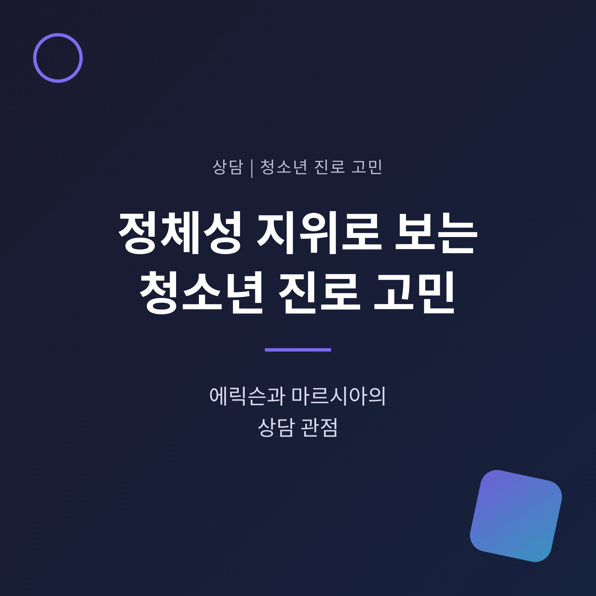
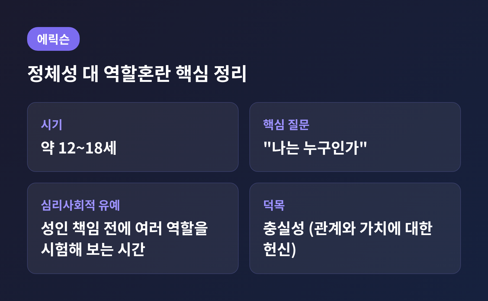
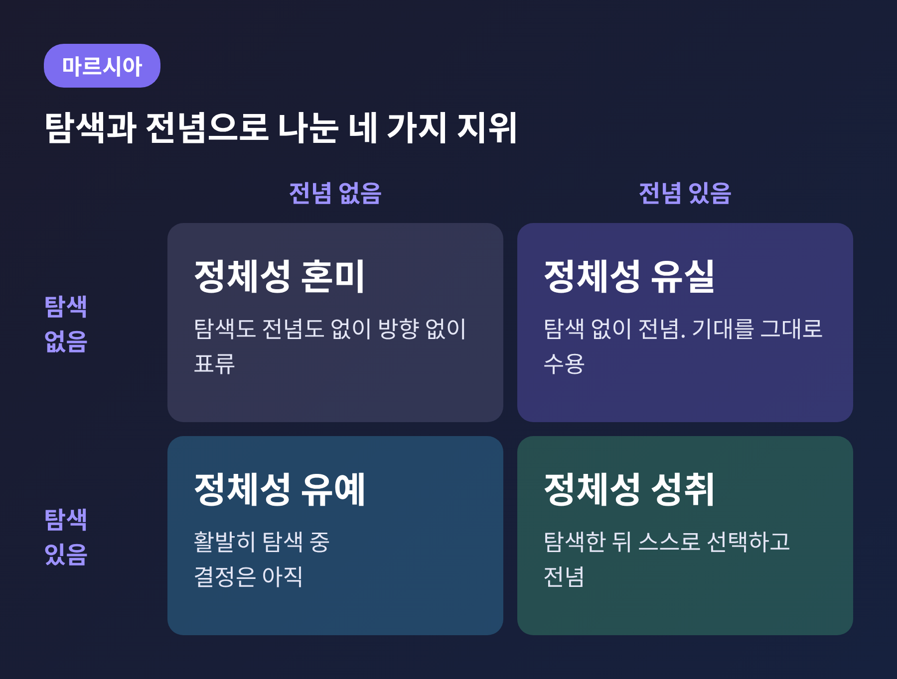
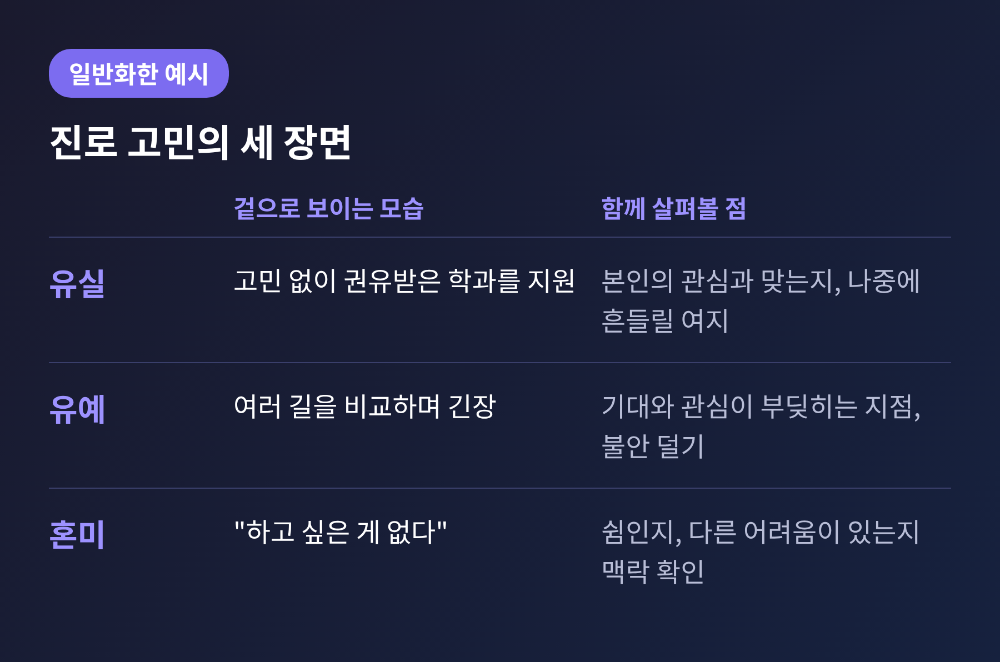
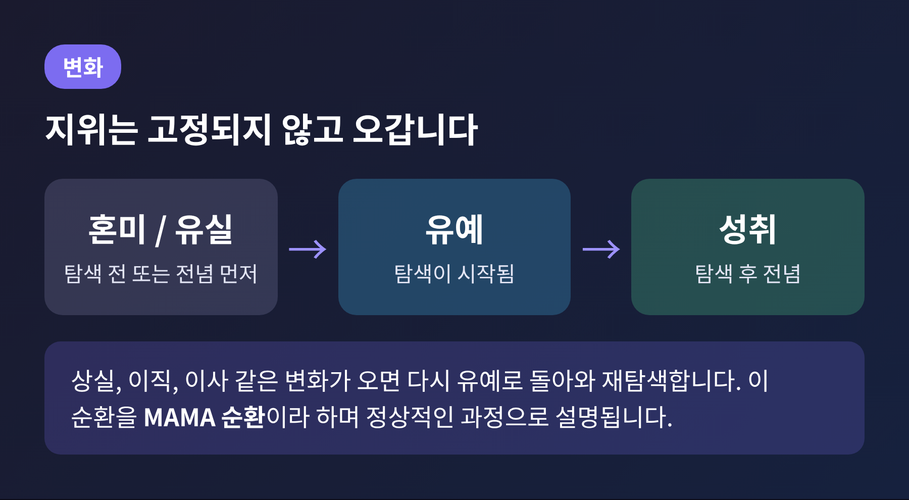
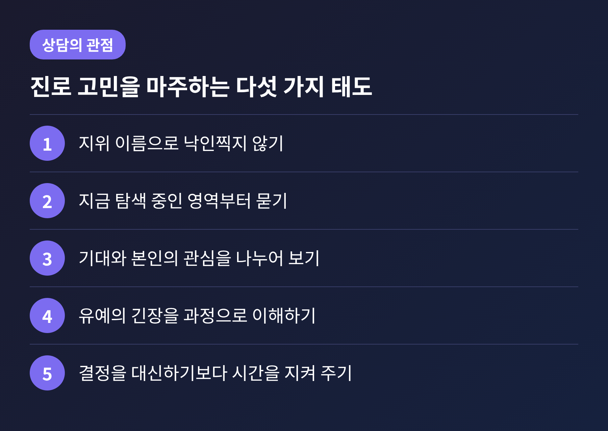

이번 글에서는 청소년이 진로를 고민할 때 마음에서 일어나는 일을 에릭슨의 정체성 대 역할혼란과 마르시아의 정체성 지위로 정리해 보겠습니다.
"무엇이 되고 싶은지 모르겠다"는 말이 왜 자연스러운 과정일 수 있는지, 상담에서는 이를 어떻게 바라보는지가 핵심입니다.
아래 내용은 일반적인 이해를 돕기 위한 설명이며, 특정 청소년을 진단하거나 평가하는 글이 아닙니다.
에릭슨은 인생을 여러 발달 단계로 나누었고, 청소년기를 정체성 대 역할혼란의 단계로 불렀습니다. 대체로 12세에서 18세 무렵을 가리키며, 이 시기의 핵심 질문은 "나는 누구인가"입니다.
여기서 역할혼란은 자신의 자리에 확신이 없어 여러 생활양식을 시험해 보는 상태를 말합니다. 병명이 아니라 발달 과정에서 겪는 긴장에 가까운 개념입니다.
에릭슨은 이 시기에 '심리사회적 유예'가 필요하다고 보았습니다. 아동기의 정해진 역할과 성인의 책임 사이에 놓인 일종의 타임아웃입니다. 성인이 감당해야 할 무거운 결과 없이 직업이나 가치관을 이것저것 시험해 볼 수 있는 시간입니다.
이 개념에는 양면이 있습니다. 시험해 볼 여유는 정체성을 단단하게 만들지만, 유예가 지나치게 길어지면 역할혼란이 깊어질 수 있다고 설명됩니다.
또래의 영향도 큽니다. 친구들에게 수용받는 경험은 정체성 형성을 돕고, 배제되는 경험은 혼란을 키울 수 있다고 알려져 있습니다. 반대로 정체성을 서둘러 정하라는 압력은 반발이나 '부정적 정체성'으로 이어질 수 있다는 지적도 있습니다.

마르시아는 1966년 논문에서 에릭슨의 개념을 한 걸음 더 구체화했습니다. 정체성이 '해결 아니면 혼란'으로 나뉘는 것이 아니라, 여러 삶의 영역에서 얼마나 탐색했고 얼마나 전념했는지로 읽자는 제안이었습니다.
두 축을 교차하면 네 가지 지위가 나옵니다.

이 틀은 상담에서 "이 학생은 어디까지 와 있는가"를 가늠하는 지도처럼 쓰입니다. 다만 지도일 뿐, 사람을 네 칸 중 하나에 확정해 버리는 도구는 아닙니다. 지위는 영역별로 다를 수 있고 시간이 지나면 움직이기 때문입니다.
아래는 여러 상황을 종합해 일반화한 가상의 예시이며, 실제 특정 인물의 사례가 아닙니다.
첫째, 부모님이 권한 학과를 한 번도 의심하지 않고 지원서를 쓰는 학생이 있습니다. 겉으로는 고민이 없어 보이니 안정적으로 비칩니다. 하지만 탐색 없이 전념한 유실의 모습일 수 있고, 선택한 길이 본인의 관심과 맞지 않으면 나중에 흔들릴 가능성이 있다고 설명됩니다.
둘째, 연극과 미술을 좋아하는데 가족은 의학이나 경영을 권하는 학생이 있습니다. 이 학생은 마음속에서 여러 길을 비교하며 긴장하고 있을 것입니다. 이런 유예는 불안과 정서적 긴장이 동반되기 쉽고, 개인의 관심과 사회적 기대가 부딪히면 더 길어질 수 있다고 알려져 있습니다.
셋째, "아무것도 하고 싶은 게 없다"고 말하는 학생이 있습니다. 혼미처럼 보일 수 있습니다. 그러나 같은 말이 쉬어 가는 시간일 수도 있고, 피로나 우울 같은 다른 어려움의 표현일 수도 있습니다. 겉으로 드러난 말 한마디로 단정하지 않고 맥락을 천천히 살피는 것이 상담의 기본 태도입니다.
여기서 흥미로운 점은 불안의 양상입니다. 혼미 상태는 투자한 것이 적어 불안이 적을 수 있다는 견해가 있습니다. 반면 국내 고등학생 조사에서는 혼미와 유예 집단이 성취나 유실 집단보다 진로스트레스가 높게 나타났습니다. 측정 대상과 방법에 따라 결과가 다르므로, 어느 한쪽으로 단정하지 않는 편이 안전합니다.

국내 연구 몇 가지를 살펴보면 정체성과 진로 고민의 관계가 어느 정도 드러납니다.
서울의 한 여고생 430명을 조사한 2015년 연구에서는 진로정체감 지위를 여섯 군집으로 나누었습니다. 진로결정 수준과 진로스트레스는 군집마다 유의하게 달랐고, 성취와 유실 집단은 결정 수준이 가장 높고 스트레스가 가장 낮았습니다. 한 학교의 표본이라는 한계가 있어 그대로 일반화할 수는 없습니다.
대학생 846명을 대상으로 한 2011년 연구에서는 정체성 혼미, 유실, 유예가 진로미결정을 높이는 방향으로, 성취가 낮추는 방향으로 작용했습니다. 불안정한 애착이 정체성의 불안정을 거쳐 진로미결정으로 이어진다는 경로도 제시되었습니다.
고등학교 1, 2학년 600명을 조사한 2008년 연구에서는 자아정체성, 불안과 우울, 강박 가운데 자아정체성이 진로미결정에 가장 큰 영향을 주었다고 보고했습니다.
세 연구 모두 변수 사이의 관련성을 본 것이어서 원인을 단정할 수는 없습니다. 그래도 진로 고민을 단순히 '정보 부족'이나 '의지 부족'으로만 보기 어렵다는 점은 읽어낼 수 있습니다.
예전에는 한 번 정해진 정체성이 평생 간다고 생각하기 쉬웠습니다. 지금은 정체성이 삶 전체에 걸쳐 다시 열릴 수 있다고 봅니다.
마르시아 연구를 정리한 자료에 따르면 청소년 후기에서 성인 초기에 이르는 변화는 퇴행보다 진전이 두 배 넘게 많았고, 가장 흔한 이동은 유예에서 성취로의 이동이었습니다. 고등학교와 대학을 거치며 혼미와 유실에서 유예와 성취로 옮겨 가는 경향이 보고되며, 대학에서 가장 큰 진전이 나타난다고 합니다.
상실이나 이직, 이사 같은 큰 변화는 다시 탐색을 불러옵니다. 유예와 성취가 번갈아 나타나는 이 흐름을 'MAMA 순환'이라 부르고, 정상적이고 건강한 과정으로 설명합니다. 지금 유예에 있다는 사실이 영원히 정해지지 못한다는 뜻은 아닙니다.

한계도 짚어 두겠습니다. 이 이론들은 서구 중산층을 중심으로 만들어져 집단주의 문화에는 맞지 않을 수 있다는 비판을 받습니다. 지위가 발달 순서를 따르지 않는다는 연구도 있고, 의식적 탐색 없이 성취에 이르기도 한다는 지적이 있습니다. 가족의 의견을 존중하는 선택을 곧바로 '유실'로 읽는 것도 조심해야 합니다.
상담에서는 "빨리 정하라"고 재촉하기보다 탐색을 안전하게 해 볼 수 있는 자리를 만드는 데 무게를 둡니다. 아래는 일반적인 방향이며, 실제 방식은 상담자와 청소년에 따라 달라집니다.

진로 고민은 누구나 겪는 일이지만, 혼자 감당하기 버거운 때도 있습니다. 잠을 못 자거나 일상이 무너지는 느낌이 이어진다면 전문가와 이야기해 보시기를 권합니다.
청소년상담 1388은 여성가족부 안내 기준으로 24시간 365일 실시간 상담을 제공합니다. 유선전화는 국번 없이 1388, 휴대전화는 지역번호와 함께 1388을 누르면 됩니다. 휴대전화에서 #1388로 문자 상담도 가능하고, 사이버상담은 1388 누리집(www.1388.go.kr)에서 이용합니다. 통화료와 상담은 무료로 안내되어 있습니다.
한국청소년상담복지개발원 자료에 따르면 상담 대상은 9세에서 24세 청소년과 보호자이며, 대면상담은 지역 청소년상담복지센터와 연계해 접수면접부터 이어집니다. 운영 방식은 바뀔 수 있으니 이용 전에 공식 누리집에서 최신 안내를 확인하시기 바랍니다.
긴급하다고 느껴지는 순간에는 혼자 견디지 말고, 위의 1388에 바로 연락하시길 권합니다.
정리하면 이렇습니다.
에릭슨은 청소년의 혼란을 발달의 일부로 보았고, 마르시아는 그 혼란을 탐색과 전념이라는 언어로 풀어 주었습니다.
"고민한다는 것은 아직 길을 찾고 있다는 뜻일 수 있습니다."
정해진 답을 서둘러 내놓지 못하더라도, 곁에서 기다려 주는 어른이 한 명 있다면 탐색은 훨씬 안전해집니다. 아이의 고민을 조금 느긋하게 지켜볼 수 있겠느냐고 물으신다면, 이 글이 그 첫걸음이 되기를 바란다고 답하겠습니다.